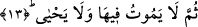

Cehennemin ateşi en büyük olan kısmına gireceklerdir.
Bazı âlimlere göre “el-kubra” en büyük ateş” Cehennem ateşidir. “es-suğra/en küçük”
ateş ise dünya ateşidir. Buna göre en ağır ve en büyük ateş âhiret ateşi, ondan daha
aşağı derecedeki ateş ise dünya ateşidir. Nitekim Peygamber (s.a.) Efendimiz’in bir
hadis-i şerifi buna işâret etmektedir: “Sizin şu dünya ateşiniz Cehennem ateşinin
yetmiş parçada bir parçasıdır. Bu ateş kendisine yaklaşmak mümkün olsun diye iki
kez denizin suyuna batırılmıştır. Eğer böyle yapılmamış olsaydı siz o ateşe
yaklaşamazdınız.” [81] Âlimlerin ifâdelerine göre dünya ateşinin bizzat kendisi bile
Cehennem ateşinden ve oraya girmekten Allah’a sığınır.
Fakir (Bursevî)’in kanâatine göre “en büyük ateşten maksad en büyük azap olsa
gerektir.” Nitekim Allah bir âyet-i kerimede bu en büyük azaba şöyle işâret buyurur:
“İşte öylesini Allah en büyük azap ile cezâlandırır.” (Ğaşiye, 88/24) En küçük azaba
gelince bu da dünya azabı ile berzah azabıdır. Çünkü bu iki azap âhiret azabına oranla
daha küçüktür.
Hikmetli konuşan bilge kişilerden birisi şöyle der: Bedbahtlığın alâmeti çoktur.
Yemek, içmek, uyumak, günah işlemekte ısrar etmek, kalp katılığı, çok günah, Rabbı
unutmak, onun huzurunda bir gün duracak olduğunu akla getirmemek. İşte en büyük ateşe
girecek olan bedbaht kimse burada nitelikleri sıralanan kimselerdir.
et-Te’vilâtü’n-Necmiyye’de şöyle deniyor: Ateş iki çeşittir. Birisi şehvetlerle ve
lezzetlerle meşgul olmaktan dolayı dünyada insanın başına gelen hicap nârıdır. Bu en
küçük ateştir. Bir de âhiret hicabının nârı vardır. Bu insanın bir başına bırakılması,
hüsrana uğraması, huzur-i ilahiden kovulması ve hicran içinde olmasıdır. Nitekim bütün
bunlara Allah şu âyetinde işâret buyuruyor: “Bu dünyada kör olan kimse âhirette de
kördür. Üstelik iyice yolunu şaşırmıştır” (İsra, 17/72) Âyetin deyimiyle bu kimse
yolunu şaşırmıştır. Çünkü istidadını yitirmiştir.
Kâşânî ise en büyük ateşin şirk koşmaktan ve ağyar ile meşgul olmaktan dolayı
Rab’tan mahrum kalma ateşi olduğunu ifâde eder. Yine ona göre en büyük ateş sıfatlar
makamında kahır nârı, gazab nârı, efalin makamında suht nârı, dört durakta asar
Cehenneminin nârıdır. Bu dört durak mülk, melekut, ceberut mevkıfı ile lahut huzurudur.
İşte bu durak yerlerinde ebediyyen âsâr Cehenneminin nârı en büyük ateştir ve bu ateş,
ne kadar büyük ateştir.
13. Sonra o orada ne ölür, ne de yaşar.
“Sonra o orada ne ölür” ki istirahate kavuşsun “ne de” kendine yararlı bir hayat
“yaşar.” Bu ifâde tıpkı şiddetli bir hastalığa tutulmuş kimse hakkında “bu adam ne
diridir ne de ölüdür” demeye benzer. Âyette yer alan “sümme” şiddetin mertebeleri